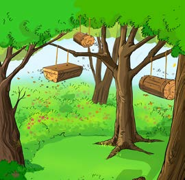
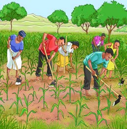
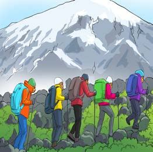
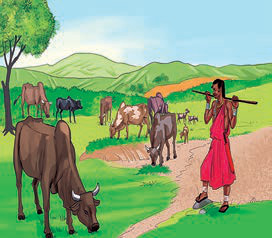

Uhusiano wa Jiografia na Mazingira
Jiografia na Mazingira ni dhana zinazohusiana na ni vigumu kuzitenganisha. Tumejifunza kwamba mazingira ni vitu vyote vinavyotuzunguka, wakati Jiografia inapambanua kuhusu vitu hivyo. Kwa hiyo, Jiografia inatupatia uelewa kuhusu mazingira yanayomzunguka binadamu na namna tunavyoweza kuhusiana nayo. Vitu kama vile misitu, milima, maziwa, mito, bahari, hali ya hewa, ardhi, na wanyama ni sehemu ya Jiografia na Mazingira. Kwa hiyo, ni muhimu kujifunza dhana hizi mbili kwa pamoja.
Kazi ya kufanya namba 5
Chunguza Kielelezo namba 6, kisha jibu maswali yanayofuata:




Kielelezo namba 6: Shughuli mbalimbali katika mazingira